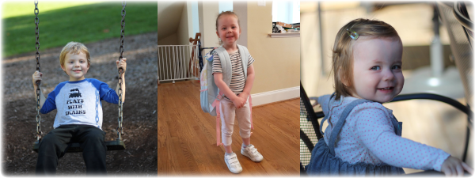

Christmas Greetings 2021
2021 was a year of new beginnings for the Hicks clan. Our big news is that we (somewhat unexpectedly) took a leap of faith and moved across the country. We found and bought a house sight-unseen, packed up our wonderful Sunnyvale home (with plenty of help from friends and family), threw a “drive-thru” masked going away party, and made our escape to Virginia. Our new place has been great, though we’re still settling in.
Cross-country move
Fortunately, with most of the world still on lockdown, neither of our jobs were negatively impacted by the move: Steve was promoted to Staff Software Engineer at Google this spring, and has been approved for permanent remote work (which was quite a relief). Brianna still works part time at Cornerstone Research and enjoys managing.

Christopher (5½), Una (almost 4), and Emily (1½)
After over a year in seclusion, the children finally got out! Christopher and Una both attended Vacation Bible School (in-person!) this summer and now participate in Awana (Christopher as a Spark and Una as a Cubbie). Christopher started (homeschool) Kindergarten and is involved in Classical Conversations and a weekly academy program where he is making friends and learning a lot. Una started a fabulous preschool program and is thriving in it. Emily continues to be a joy, has shown that she can hold her own in this family, and is constantly trying to keep up with her siblings.
Smokies (left), Shenandoah (right)
Date night!
We enjoyed some wonderful family visits this year. We hiked in the Smoky Mountains with Steve's family and in Shenandoah National Park with Brie's family. Living closer to family has been a huge blessing.
We are thankful for our friends (new and old) and family who have supported us. We enjoyed video conference and in-person catch-ups throughout the year, and look forward to hosting more of you in our new home the next time you are in the Northern Virginia/DC Area (or “the DMV” as the locals call it).
Blessings,
Team Hicks
Brianna, Steve, Christopher, Una, and Emily
May the peace and comfort of Jesus Christ be with you now and throughout 2022, whatever it may bring!
Fall colors